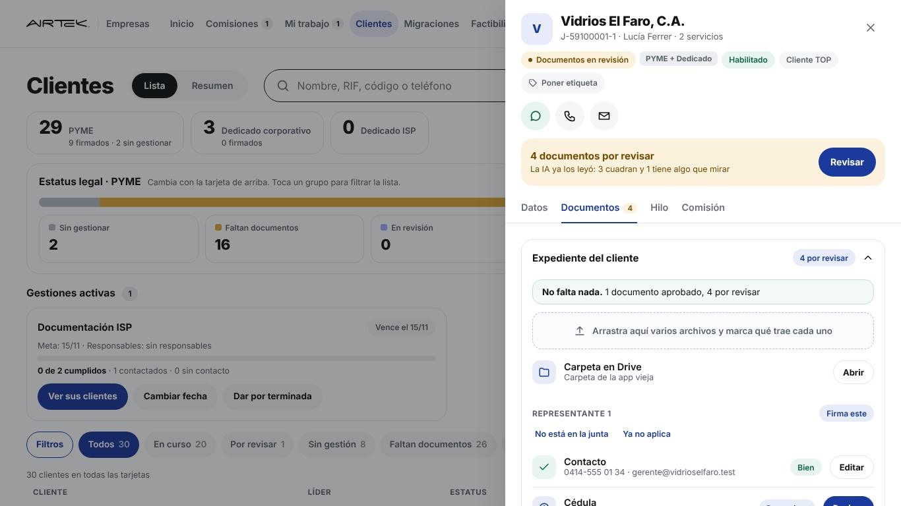
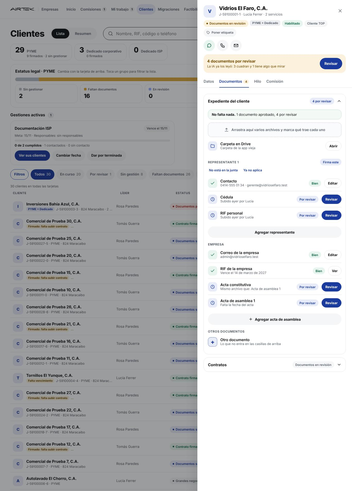
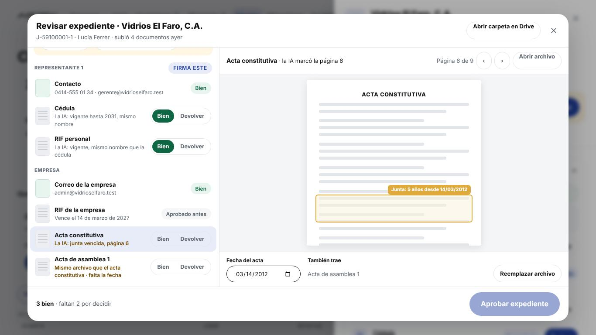
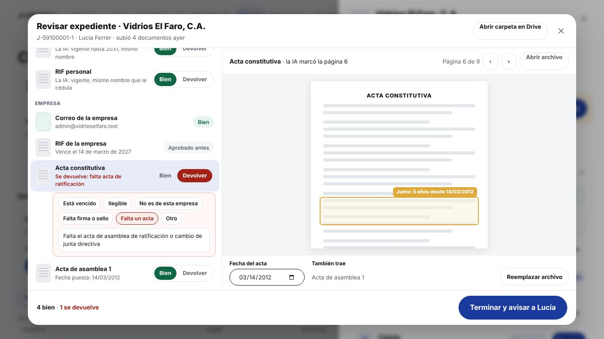
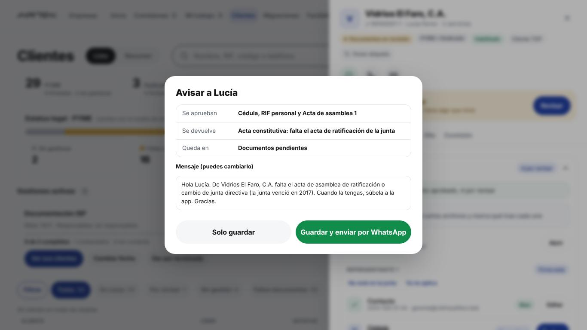
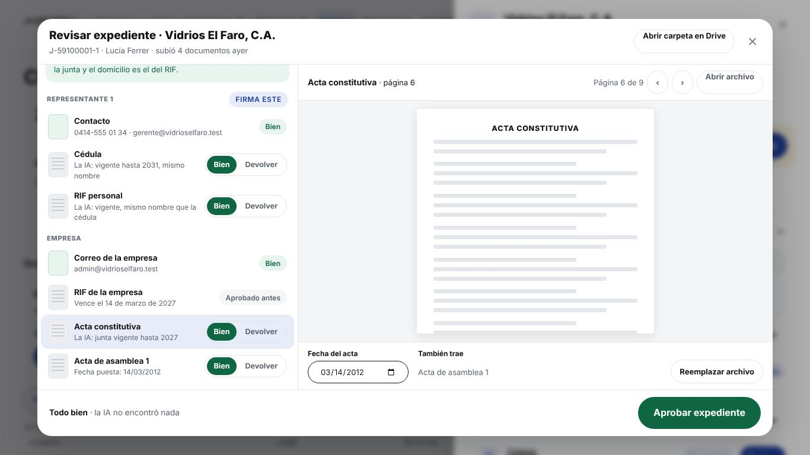
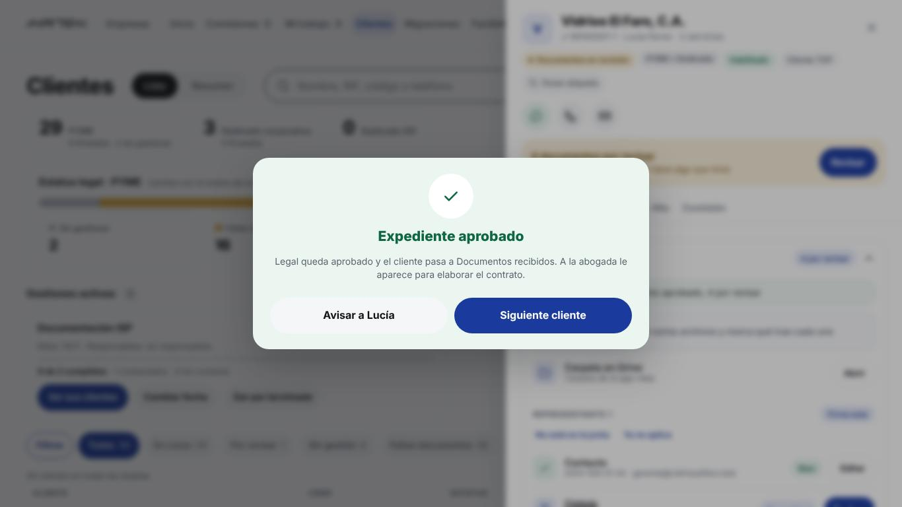
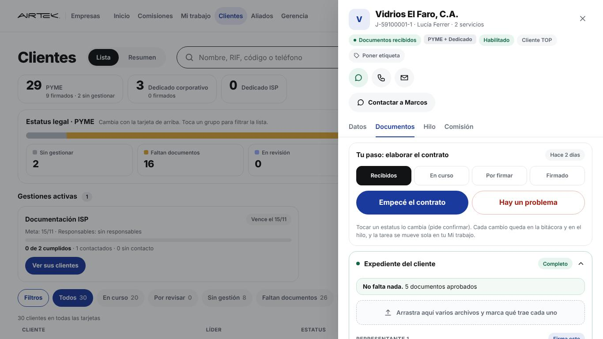
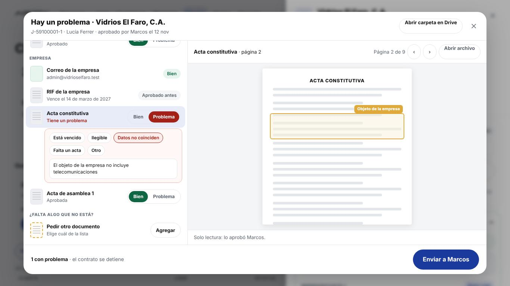

Estas capturas son la app de hoy (simulador, datos de prueba) con los cambios puestos encima, con los mismos estilos, pestañas y secciones. Lo que no se nombra queda igual.

Es tu ficha de hoy con un solo cambio arriba: la banda dice cuántos documentos hay por revisar y qué encontró la IA, con un solo botón Revisar. Se quitan el recuadro "4 documentos por revisar · Ver los 6 puntos", la fila "Revisar 4 · Aprobar seleccionados" y la tarjeta "Mandar a revisión con IA" (la IA corre sola cuando el líder sube). Las pestañas (Datos, Documentos, Hilo, Comisión) y las secciones (Expediente, Contratos) quedan iguales.
Toca: Revisar

Representante 1 (Firma este, No está en la junta, Ya no aplica, Contacto, Cédula, RIF personal, Agregar representante), Empresa (Correo, RIF, Acta constitutiva, Acta de asamblea, Agregar acta), Otros documentos y Contratos (PYME, dedicado, Adendum, Otro contrato). El "Revisar" de cada casilla abre la misma pantalla de revisión, ya parada en ese documento.

Arriba a la izquierda, lo que encontró la IA con Ver en el acta y Aprobar igual (excepción). Debajo, los documentos agrupados igual que en la ficha (Representante 1, Empresa), cada uno con Bien / Devolver; el contacto y el correo salen como dato; lo ya aprobado antes no se vuelve a pedir. A la derecha, el documento grande en la página que importa, y abajo sus datos de siempre: fecha del acta, también trae y Reemplazar archivo. Cambias de documento con un toque o con las flechas.
Toca: el documento en la lista

Al tocar Devolver se abren los motivos de siempre (vencido, ilegible, no es de esta empresa, falta firma o sello, falta un acta, otro) y la nota. "Falta un acta" trae el texto que propuso la IA. Cuando no queda nada sin decidir, el botón de abajo dice Terminar y avisar a Lucía.
Toca: Terminar y avisar a Lucía

Qué se aprueba, qué se devuelve, en qué estatus queda y el mensaje editable. Solo guardar o Guardar y enviar por WhatsApp. Reemplaza los dos "Cerrar revisión" de hoy.
Toca: Guardar y enviar por WhatsApp

Si la IA dice que todo cuadra, los documentos ya vienen en Bien. Miras los que quieras y tocas Aprobar expediente. No sale la revisión legal de los 6 puntos aparte: lo que la IA revisó de la empresa (junta, firmantes, domicilio, vigencia) ya está arriba.
Toca: Aprobar expediente

Legal queda aprobado y el cliente pasa a Documentos recibidos; a la abogada le aparece para el contrato. Siguiente cliente abre el próximo que espera.

No cambia: Tu paso con los 4 estatus, Empecé el contrato y Hay un problema. El expediente sale completo y aprobado.
Toca: Hay un problema

Ve el documento al lado (solo lectura) y marca Problema con el motivo, o Pedir otro documento si falta uno que no está. Al tocar Enviar a Marcos el contrato se detiene, el cliente vuelve a Documentos pendientes y te llega en "Observaciones de Legal".
Toca: Enviar a Marcos
La banda "Te toca revisar" con su botón aparte, el recuadro "N por revisar · Ver los 6 puntos", la fila "Revisar N · Aprobar seleccionados", la tarjeta "Mandar a revisión con IA", el panel de los 6 puntos con su "Cerrar revisión", el segundo "Cerrar revisión" y el visor de un documento por hoja.
Pestañas, secciones y casillas de la ficha; motivos de devolución; Pedir otro documento; fecha del acta, también trae y Reemplazar archivo; excepción con motivo; mensaje al líder; Tu paso y Hay un problema de la abogada; Abrir la carpeta en Drive; Revisar en lote de Mi trabajo (ahora por cliente).